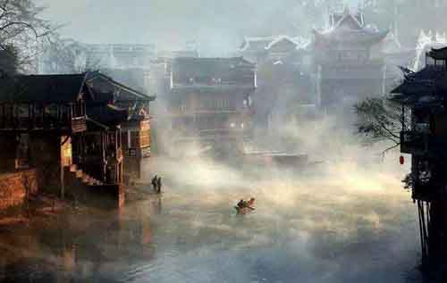

迷人的凤凰古城
沱江泛舟
湘西沱江是凤凰县境最大的河流，是凤凰古城的母亲河。沱江泛舟的票含在九景联票之内。虹桥横卧于沱江之上，始于明代洪武年间。它在古城中央，桥下有各种各样的手工艺地摊。
清晨的凤凰古城
清晨的古城，还是很凉的，大街上稀疏行走着刚到此地的游人，或拖着行李箱，或挽着情人。这个时候的古城特别安静，听不到水声，听不到打闹的声，更听不到酒吧的歌声。

夜晚的凤凰古城
晚上的古城灯火辉煌，店铺林立，游人如织，酒吧声狂，到处都是成双成对，到处都是乱花迷眼。人在桥上留影的更是络绎不绝，大多数要来往两岸的都走这一条桥。这座城一直闹到晚上11点才开始安静下来，12点之后就很安静，放佛听得到沱江缓缓流下的声音。